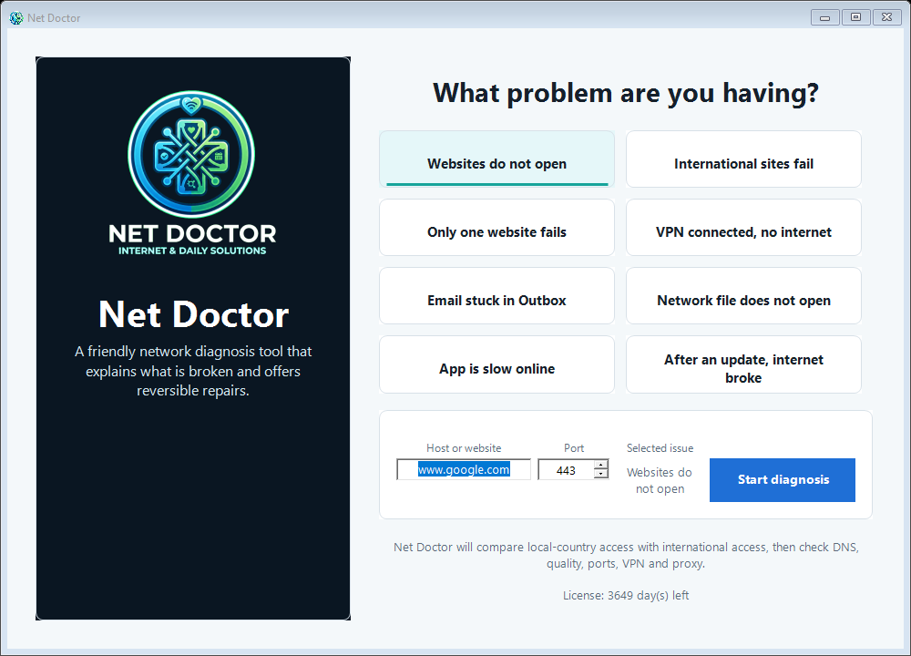
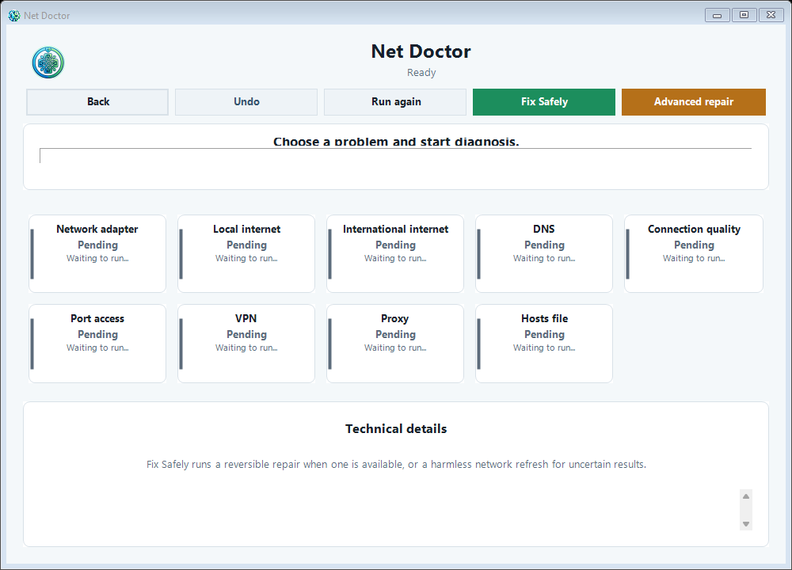

Problem-first flow
Start from your symptom, not from technical menus.
NetDoctor · AT8 project
A Windows app for people who just want to know "why isn't my internet working?" — without understanding DNS, gateways, proxies, or VPN adapters. Pick the problem, get a guided diagnosis, and a safe, reversible fix.
"Is the internet up?" is often the wrong question — especially in Iran. The real questions are whether local/internal access works, whether international access works, and whether the fault is DNS, VPN, proxy, the gateway, or the ISP. Most people can't tell which one it is.
Features
Start from your symptom, not from technical menus.
A clear verdict on what works and what doesn't, separated by scope.
Compares your system DNS against multiple public resolvers, including Shecan, Electro, and Begzar.
Adapter, gateway, DNS, latency and packet loss, TCP port reachability, VPN adapters, and Windows proxy.
Switch DNS, reset a stale proxy, or refresh the network — always saving the previous setting first, with Undo.
A full Winsock / TCP-IP stack reset behind a clear warning, for the toughest cases.
Screenshots


Editions
English interface, country auto-detected, built for users anywhere in the world.
Persian (فارسی) right-to-left interface, tuned for Iranian sites, ISPs, and DNS resolvers.
How licensing works
Send the Machine ID shown on the app's activation screen and tell me which edition you need.
A personal key is issued for that one computer, bound to its edition.
Paste the key on first launch. The app stays active for the licensed period; renew monthly to continue.
Tech stack
Related projects